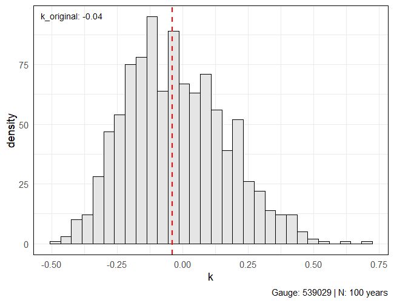

Motivação (mantra)
A ideia por trás de investigar o ajuste incluindo informação adicional está na realidade do nosso conjunto de estações: são muito curtas. Realizando um experimento bootstrap m-de-n, podemos entender melhor a influência de séries longas na estimativa do parâmetro de forma com momentos-L. Pegamos uma série originalmente com 100 anos de dados que estimou \(\hat\kappa_{LMOM} = -0.04\) e fazemos reamostragens de tamanho \(M\), em que \(M\) tem 15 anos neste exemplo.

Isso mostra o quão incertas estimativas podem ser para extremos quando temos poucos anos de dados. Com estratégias regionais como essa que estamos avaliando — construir um modelo de distribuição a priori regional para o parâmetro de forma usando GLS — estamos “trocando espaço por tempo” e buscando incorporar informação de outras formas.
Então mesmo que na média, para os dados observados, o modelo de IDF com informação adicional não seja muito diferente do modelo clássico, a diferença que de fato estamos observados é nos extremos, onde o \(\kappa\) mais influencia. ## Tarefas - [ ] Figura comparação redução incerteza com priori regional. Otimização e verossimilhança: - [x] Adicionar restrições para a + kappa dentro da função nll.dgev() seguindo a formulação em aux_function.R para a verossimilhança para uma única duração; - [x] Adicionar distribuição a priori para \(\kappa\) na função nll.dgev(); - [x] Afrouxar as restrições algumas estações não estão ajustando e retornam fit$max == 1e6; - [x] Parâmetro theta está retornando negativo para algumas estações; Testes realizados - Otimização sem distribuição a priori + method = "Nelder-Mead: OK - Otimização sem distribuição a priori + method = "L-BFGS-B": OK - Otimização com distribuição a priori + method = "Nelder-Mead": OK - Otimização com distribuição a priori + method = "L-BFGS-B": OK - - - ## Alguns achados/hipóteses Intervalos de confiança com bootstrap pode não ser a melhor das opções para séries muito curtas (já é meio óbvio). Gera muita instabilidade no modelo e valores de parâmetro de forma e, consequentemente, quantis muito absurdos. - - - ## Parametrização de Koutsoyiannis et al. (1998) e Ulrich et al. (2020)
A base para a parametrização da relação IDF de Koutsoyannis está na forma generalizada proposta:
i = \frac{a(T)}{b(d)}.\(b(d)\) nesse caso pode ser escrito como \(b(d) = (d + \theta)^\eta\) e \(a(T)\) sendo determinada a partir da distribuição de probabilidades de intensidade máxima de chuva \(I(d)\).
Considerando que a intensidade \(I(d)\) de uma determinada duração \(d\) possui distribuição \(F_{I(d)}(i,d)\), essa será a mesma distribuição de uma variável \(Y\) dada por \(Y:=I(d)B(d)\), que nada mais é que a intensidade escalonada por \((d)\).
Essa relação de probabilidades é expressa por:
\[ P\{I(d) \leq i\} = P\{I(d) b(d) \leq i b(d)\} = P\{Y\leq y\}, \]
e também pode ser escrita como
\[ F_{I(d)}(i,d) = F_Y(y_T) = 1 - \frac{1}{T}. \]
Logo, sendo \(y_T\) o quantil \((1 - 1/T)\) da distribuição de CDF \(F_Y\), então:
\[ y_T \equiv a(T) = F_Y^{-1}(1 - 1/T). \]
Se \(I(d)\sim GEV (\xi(d), \alpha(d), \kappa)\) e \(P\{I(d) \leq i\} = P\{Y \leq y\}\):
F_{I(d)}(y) = \exp \left\{ - \left[ 1 - \kappa\left(\frac{y - \xi}{\alpha}\right) \right]^{1/\kappa} \right\}Para a definição dos quantis, \(y_p \equiv a(T)\) , definimos \(p\) como a probabilidade de não excedência \(p = 1 - 1/T\), e resolvemos \(F_Y(y)\) para \(y_p\):
\begin{gather}
F_Y(y) = p \implies p = \exp\left\{ - \left[ 1 - \kappa\left(\frac{y - \xi}{\alpha}\right) \right]^{1/\kappa} \right\}, \\
-\log(p) = \left[ 1 - \kappa\left(\frac{y - \xi}{\alpha}\right) \right]^{1/\kappa} \implies \left[ 1 - \kappa\left(\frac{y - \xi}{\alpha}\right) \right] = [-\log(p)]^\kappa, \\
1 - \kappa\left(\frac{y - \xi}{\alpha}\right) = [-\log(p)]^\kappa, \\
\frac{y - \xi}{\alpha} = \frac{1 - [-\log(p)]^\kappa}{\kappa}, \\
y_p = \xi + \frac{\alpha}{\kappa}\left\{ 1 - [-\log(p)]^\kappa \right\} \equiv a(T).
\end{gather}Como os parâmetros \(\xi\) e \(\alpha\) dependem da duração para qual \(y\) foi observado, temos que \(\xi = \xi(d)\) e \(\alpha = \alpha(d)\). Há evidência suficiente para provar que o parâmetro de forma é incerto o suficiente para que seja razoável defini-lo como constante ao longo de diferentes durações. Pela hipótese de invariância de escala, definimos que há uma relação entre os momentos de diferentes durações:
\[ I(d) \overset{\text{dist}}{=} \left(\frac{d+\theta}{D + \theta}\right)^{-H}I(D). \]
Essa relação pode ser testada para os momentos \(E[I(d)] \sim E[I(D)]\) (sentido amplo) e para os parâmetros de uma distribuição de extremos (sentido restrito). Já discutimos sobre a constância do parâmetro de forma, \(\kappa(d) = \kappa\). Para posição e escala, porém, temos:
\[ \xi(d) = \left(\frac{d+\theta}{D + \theta}\right)^{-H} \xi(D), \qquad \alpha(d) = \left(\frac{d+\theta}{D + \theta}\right)^{-H} \alpha(D). \]
Isso implica que tanto \(\xi(d)\propto (d+\theta)^{-H}\) como \(\alpha(d) \propto(d + \theta)^{-H}\). Logo, a razão \(\xi(d)/\alpha(d)\) pode ser entendida como constante ao longo das durações \(\boldsymbol d\).
Dessa forma, Ulrich et al. (2020) definem uma variável de posição adimensional \(\tilde\xi\) definida pela razão entre posição e escala e definem \(\alpha_0\) como uma constante de proporcionalidade para a invariância de escala do parâmetro de escala da GEV:
\[ \tilde\xi = \frac{\xi(d)}{\alpha(d)}, \qquad \qquad \alpha(d) = \alpha_0 (d + \theta)^{-H}. \]
Com essa reparametrização, podemos reescrever a expressão da CDF e do quantil da relação IDF com a distribuição GEV como:
\begin{gather}
F_{I(d)}(i) = \exp\left\{ -\left[ 1- \kappa \left( \frac{i}{\alpha_0(d + \theta)^{-H}} - \tilde\xi \right) \right]^{1/\kappa} \right\}, \\\\\\
%
I(d,T) = \frac{a(T)}{b(d)}, \\\\ y_p = \xi(d) + \frac{\alpha(d)}{\kappa}\left\{ 1 - [-\log(p)]^\kappa \right\} \implies
I(d,p) = \tilde\xi\alpha(d) + \frac{\alpha(d)}{\kappa}\left\{ 1 - [-\log(p)]^\kappa \right\}, \\\\
I(d,T) = \frac{\tilde\xi\alpha_0}{(d+\theta)^H} + \frac{\alpha_0}{\kappa(d+\theta)^H}\left\{ 1 - \left[-\log\left(1-\frac{1}{T}\right)\right]^\kappa \right\}.
\end{gather}Derivada do logaritmo de \(\pi(\kappa)\)
A distribuição a priori do parâmetro de forma \(\kappa\) pode ser dada por uma distribuição Beta definida entre \([-0.50, +0.50]\) conforme Martins e Stedinger (2000):
\[ \pi(\kappa) = \frac{(0.50 + \kappa)^{p-1}(0.50 - \kappa)^{q-1}}{\Gamma(p)\Gamma(q)/\Gamma(p+q)} \]
Para combinar à função de log-verossimilhança, tiramos o logaritmo de \(\pi(\kappa)\):
\[ \log\pi[(\kappa)] = (p-1)\log(0.50 + \kappa) + (q-1)\log(0.50 - \kappa) \]
Podemos remover o denominador, pois este não depende de \(\kappa\) e não influenciará os parâmetros resultantes durante a otimização. Além disso, também precisamos derivar a expressão acima em função de \(\kappa\) para incluí-la na função gradiente.
\[ \frac{\partial\log[\pi(\kappa)]}{\partial\kappa} = \frac{p-1}{0.50 + \kappa} + \frac{q-1}{0.50 - \kappa} \]
Investigando o ‘profile likelihood’: método do perfil de verossimilhança
A motivação está em dois fatores: instabilidade no método Bootstrap com séries muito curtas (Efron e outros autores recomendam mais de 30 anos pelo menos); e intervalos possivelmente muito confiantes com o método Delta.
Seguindo Coles (2001, An introduction to statistical modeling of extreme values), a avaliação numérica do perfil de verossimilhança é simples. Para cada um dos parâmetros de interesse — no nosso caso \(\tilde\xi\), \(\alpha_0\), \(\kappa\), \(H\) e \(\theta\) — precisamos apenas fixar cada parâmetro por vez e maximizar a função log-verossimilhança com relação aos demais parâmetros. Esse processo é repetido ao longo de um intervalo de parâmetros. Para \(\tilde\xi\) por exemplo, definimos que \(\tilde\xi = \tilde\xi_0\), maximizamos a log-verossimilhança com respeito à \(\alpha_0\), \(\kappa\), \(H\) e \(\theta\) e repetimos o processo para diferentes valores de \(\tilde\xi_0\).
A definição de Coles (2001) é a seguinte. Define-se a função de log-verossimilhança como \(l(\theta_i, \theta_{-i})\), sendo \(\theta_{-i}\) os demais parâmetros que não são \(\theta_i\). Assim, o perfil de verossimilhança de \(\theta_i\) é dado por:
\[ l_p(\theta_i) = \underset{\theta_{-i}}{\max} l(\theta_i,\theta_{-i}). \]
Isso pode ser entendido como o perfil da função log-verossimilhança ao longo do eixo de \(\theta_i\).